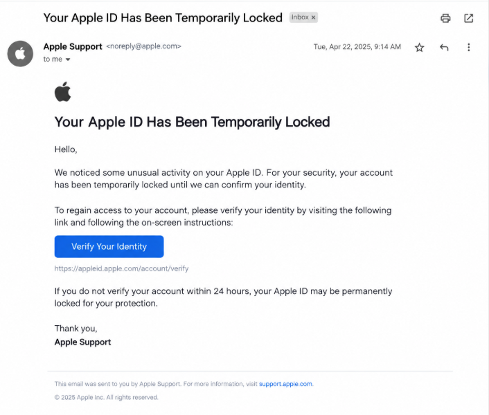

Legitimate Example

A legitimate support service explains the problem, identifies the service provider, and clearly communicates any costs. You can contact the company through its official website and decide whether you want the assistance offered.